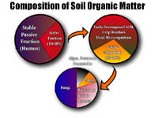
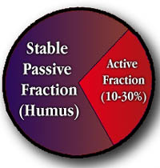
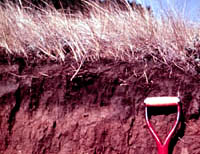
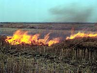

|
|
|
Soil organic matter is perhaps the single most important indicator of soil quality and productivity.
It is important for the following reasons:
If soil organic matter is so important then why do we not take better care of it? Long-term studies show that organic-matter levels of many soils have declined to half or less of what was present when they were first tilled. Even when livestock manure and forage crops have been grown, organic matter has still declined. We can say quite truthfully that we have been mining our soils for nutrients. |
|||
 Composition of Soil Organic Matter The quantity of carbon in the soil ultimately depends on the balance between photosynthesis and respiration. Plants and some microorganisms (autotrophs) absorb atmospheric CO2 and change it into organic compounds. Other soil organisms (heterotrophs) consume the organic residues of plants and animals converting them back to CO2 which eventually finds its way back into the atmosphere in a continuous carbon cycle. In Saskatchewan, the amount of carbon (organic matter) in the soil is readily recognized by the colour of the surface horizons and gives rise to the soil zones Soil organic matter contains about 50% carbon, 40% oxygen, 5% hydrogen, 4% nitrogen, 1% sulphur. Most of the other mineral nutrients are also associated in some way with organic matter: some as exchangeable cations and anions, cation bridges, or simply adsorbed on the surface.  Organic matter can be separated into two main components: the active fraction, which turns over in period of 10 to 25 years and a passive fraction which turns over in hundreds to thousands of years. The active fraction is the part responsible for nutrient cycling and is composed of living organisms, their metabolites and decaying plant and animal residues. The passive fraction is the more humified material that has undergone mainly reactions that condense and polymerize the carbon compounds to produce resistant material to microbial degradation. Carbon dating of soil organic matter fractions have shown some to be older than 3000 years.
| |||
 Losses of Organic Matter In a natural grassland or forest ecosystem, soil organic matter accumulates with soil development and eventually arrives at an equilibrium which is mainly determined by the environment and natural vegetation. In Saskatchewan soils with the most amount of organic matter (not peats) are found in the Black soil zone (see image). These soils are also the most fertile. Unfortunately, once the soil is tilled and cropped massive changes occur within the soil system. Long-term studies show that organic-matter levels of many soils have declined to about half of what was present when they were first tilled. Even when livestock manure and green manure crops have been added, organic matter has declined. We have, in fact, been mining our soils! Tillage mixes oxygen into the soil and breaks up structure, giving microbes all they need to burn up organic matter and release carbon dioxide into the atmosphere. In the natural state much of the organic matter is protected. Think of the soil system as millions of tiny pores of all sizes and shapes.. Much of the organic matter is trapped in areas inaccessible to microbes. Other organic matter particles are clumped together allowing microbes access to the outside while the centre remains protected. Tillage changes all this, like a large mix master, stirring and churning mixing everything together. Microbes suddenly find a feast and proceed to multiply spitting out excess nutrients that if not taken up by the crop get leached out of the soil.
| |||
 Managing Organic Matter Research is clear. Anytime you drag a plough through soil you will lose organic matter despite additions of manure and crop residues. It is also clear that cropped land will have a lower organic matter content than the virgin grassland. The question is: what is tolerable? In some parts of the province and many other parts of the world, land is cropped that is best left alone or put to pasture. In many instances, land such as this is broken and supports crops for only a few years before it becomes uneconomical to continue. The slash and burn type of agriculture practised in the rainforest is an example. Forests are cleared and the trees and detritus burned. Crops are planted into a very thin soil with low organic matter content. The organic matter rapidly depletes and the soil becomes subject to erosion, washing away and adding huge amounts of sediment to the lakes and rivers - an environmental catastrophe. In parts of Saskatchewan, particularly the southwest, the natural vegetation is very sparse, so why would we think that we could produce good crops over the long term? Particularly without irrigation. Are there any ways to minimise organic matter losses? Yes, there are - but no method has proven as effective as mother nature. The government has tried to promote conservation farming practices which include:
|